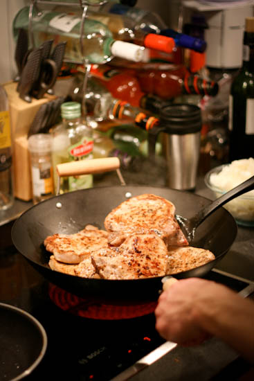

"The key for this dish are limes and tequila, although lemons can be supplemented. Tequila could be supplemented with dry white wine, but then it wouldn’t be tequila pork, now would it? "
Season both sides of the pork chops (taste the seasoning for saltiness and adjust salt if necessary)
Squeeze the lime juice
Clean and roughly chop the onions
Heat up a deep skillet on medium heat and add a 2 Tsp of oil (I prefer olive but any type will do)
Brown well both sides of the chops
Once the chops are browned, toss all the onions on top, pour the lime juice and add 2 good shots of tequila
Cover & simmer for about 45 minutes or until the chops are tender
Salt / pepper can be added at any point for tune-up
Serve over cooked/steamed rice.
4 pork chops
2-3 limes depending on size
4 medium size onions (any type is good) - extra green onions are a nice touch
Some peppery steak seasoning (e.g. Montreal steak spice)
Cooking grade tequila (not Patron – that is sacrilege)
Cooked / steamed rice (1 cup dry = 3 cups cooked)